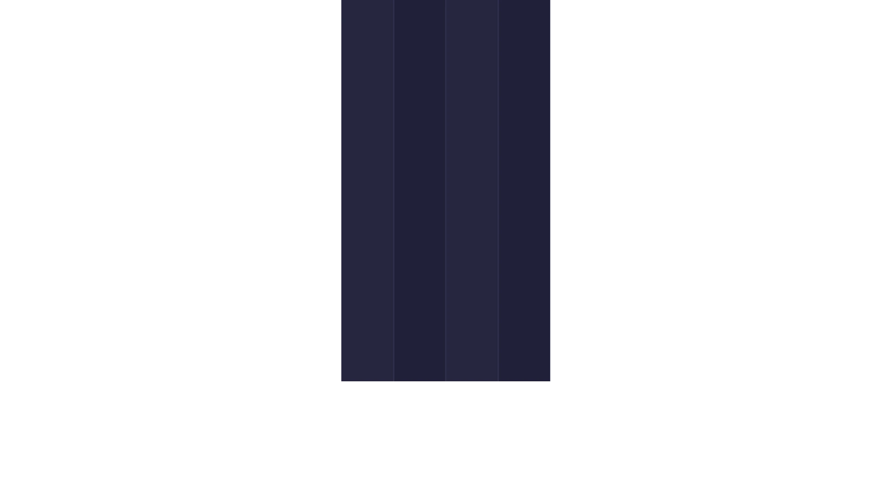
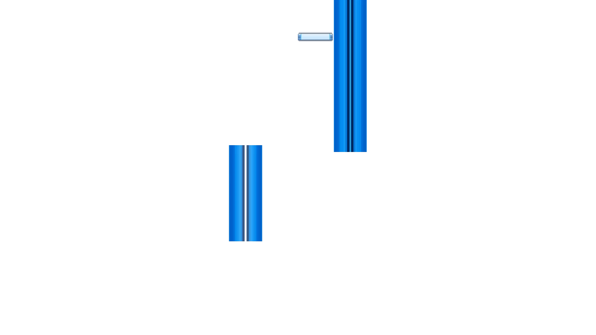
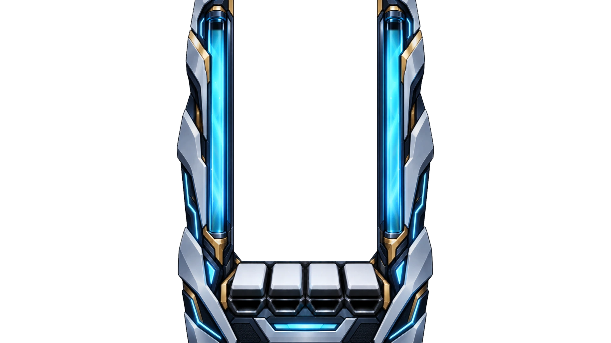
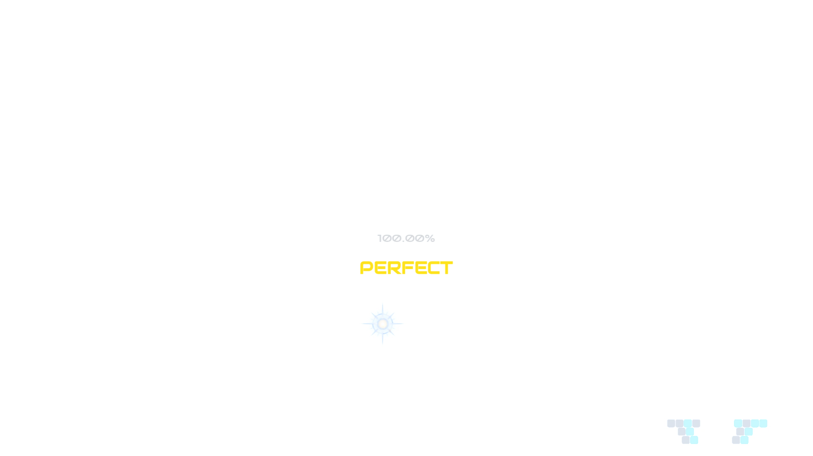

FLIGHT BACKGROUND / 2026.10.18
배경 시안 위에 인게임 에셋 겹쳐 보기
지금 배경은 어둡고 평평한 픽셀풍이라 흰 장갑, 금색 테두리, 하늘색 발광으로 그린 Classic 기어와 화풍이 다릅니다. 기어와 같은 광택 일러스트로 그린 배경 시안 6장 위에, 실제 게임 렌더러에서 뽑은 기어·레인·노트·HUD를 올렸다 내리며 비교합니다.




A · 기어 화풍 이륙 Liftoff
배경 원본 보기

화면을 누르거나 H 키로 에셋을 올리고 내립니다. ← → 키로 배경을 바꿉니다.
배경 고르기
시안은 3:2로 생성해 16:9 화면에서는 위아래가 조금 잘립니다. 원본은 고른 배경 아래 링크에서 볼 수 있습니다.
만든 방법과 한계 펼치기
- 배경 시안은 Classic 기어 원본과 지금 게임 화면을 참고 이미지로 넣어 생성했습니다. 기어와 같은 화풍·색을 쓰고, 기어에 가려지는 가운데 띠는 차분하게, 양옆에 볼거리를 두도록 요청했습니다.
- 인게임 레이어와 지금 배경은 실제 게임 렌더러(Classic 스킨, 기어,
/lab/gear시연 차트)를 곡 시작 8.8초 시점에 멈춰 1920×1080으로 캡처했습니다. 기어 위 장식 움직임과 키봄도 그 순간의 프레임입니다. - 시안은 정지 이미지라 고도 변화와 움직임이 없습니다. 지금 게임 배경은 고도에 따라 움직이는 3D 장면입니다. 방향을 고르면 그 화풍을 움직이는 배경으로 옮기는 작업이 따로 필요합니다.